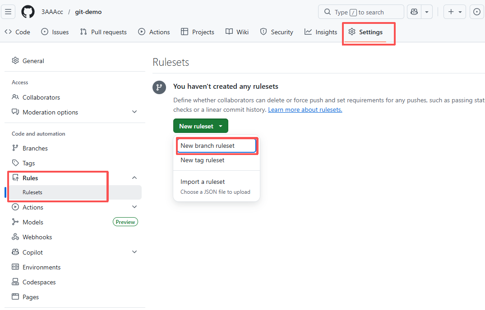
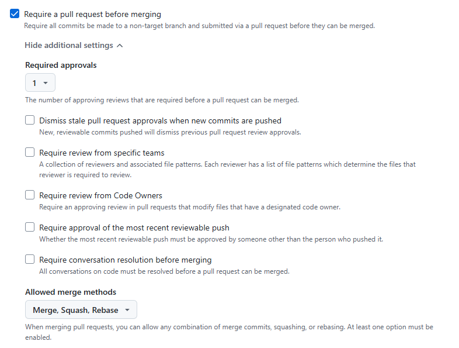
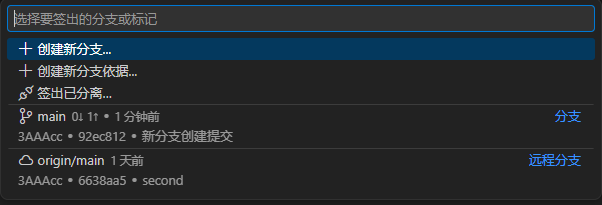
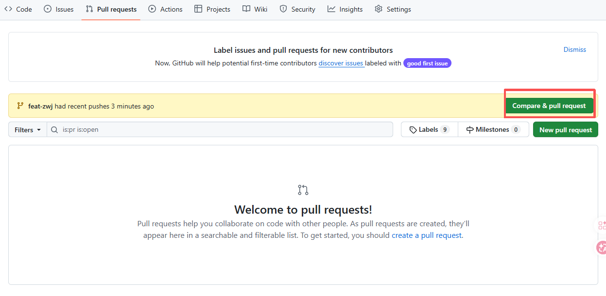
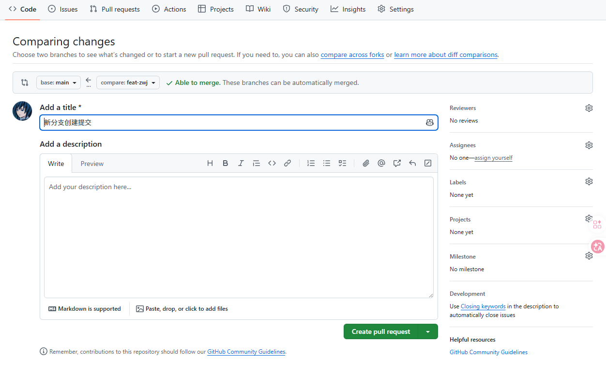

Git 进阶：分支协作与 AI 时代的代码审查
在多人开发或是使用 AI 辅助编程时，代码合并如果缺乏规范，很容易造成线上的混乱甚至灾难。本篇笔记将梳理代码审查（Code Review）中必须掌握的规则设置、分支合并流程，以及在引入 AI 工具后，我们该如何科学有效地管理 Git 提交。
1. 代码审查规则与分支设立
为了保护主分支（如 main）不被随意的代码破坏，我们需要在 GitHub 仓库中设立规则：
- 首先在仓库的设置（Settings）中的 Rules 选项卡里新建一个分支规则（New branch ruleset）。
- 给规则命名后，将其状态切换为启用（Active）。
- 紧接着选择你要施加规则的特定分支（如
main分支）。

[图片位置]：GitHub 规则设置步骤'">在规则的具体细节中，我们可以勾选“Require a pull request before merging”，并 选择需要几个人审查通过（Approve）后代码才能被合并到主分支。

[图片位置]：设置所需审批人数'">2. 新分支的创建
规范的开发应该始终在独立的分支上进行。在 VS Code 中：
- 点击底部状态栏的分支图标，选择 创建新分支。
- 一般推荐分支以
feat-自己名字（或者具体的功能描述）来命名，便于团队成员辨识。 - 创建完成后，点击云朵图标将分支 推送（Publish） 到远程仓库。

[图片位置]：创建并命名新分支流程'">3. 分支的合并 (Pull Request)
当你在个人分支上完成了开发并推送后，需要向主分支发起合并请求：
- 在 GitHub 仓库页面，系统通常会提示你最近推送了分支，点击 “Compare & pull request”。
- 在这里撰写详细的请求说明（Description），然后创建 PR。你的合作者或 Reviewer 就可在此对代码进行审查，并最终同意合并。

[图片位置]：创建合并请求与撰写说明'">4. 基于 AI 代码生成的 Git 管理
在 AI 时代（如使用 GitHub Copilot, Cursor, ChatGPT 等），代码的产出速度极快，且经常出现大规模的结构性重构，或者掺杂人类难以一眼看懂的复杂逻辑。因此我强烈推荐采用以下的 Git 管理方式：
- 记录 Prompt： 在 Commit 提交信息中，简单记录使用的“提示词”以及修改的最终结果等信息，这极大便于审查者去理解代码的生成初衷。
- 说明验证过程： 在 PR 中，必须清楚地说明自己已经对 AI 生成的代码进行了怎样的验证与测试。
在提交 PR 时，可使用类似下方的模板进行详细描述：
1. 变更摘要 (What & Why)
[简单描述这段代码修改的目的和修改范围]
2. AI 对代码结构的重大改变
[如：AI 引入了新的设计模式、拆分了原有的某个大类、或目录结构变动等，请在此高亮说明]
3. 人工验证与正确性测试 (Human Verification)
请描述你如何证明 AI 写的这段代码是“正确”且“健壮”的：
A. 主流程验证：
- 测试动作：[例如：模拟新用户登录，等待15分钟后触发 Token 刷新逻辑]
- 验证结果：[例如：验证通过，新 Token 成功下发，旧 Token 失效]
B. 边界与异常测试（AI最容易犯错的地方）：
- 测试动作：[例如：传入空参数、极大的数值、并发请求]
- 验证结果：[例如：触发了预期的 400 错误捕捉，程序未崩溃]
[简单描述这段代码修改的目的和修改范围]
2. AI 对代码结构的重大改变
[如：AI 引入了新的设计模式、拆分了原有的某个大类、或目录结构变动等，请在此高亮说明]
3. 人工验证与正确性测试 (Human Verification)
请描述你如何证明 AI 写的这段代码是“正确”且“健壮”的：
A. 主流程验证：
- 测试动作：[例如：模拟新用户登录，等待15分钟后触发 Token 刷新逻辑]
- 验证结果：[例如：验证通过，新 Token 成功下发，旧 Token 失效]
B. 边界与异常测试（AI最容易犯错的地方）：
- 测试动作：[例如：传入空参数、极大的数值、并发请求]
- 验证结果：[例如：触发了预期的 400 错误捕捉，程序未崩溃]

[图片位置]：PR 模板截图示范'">💡 对于代码审查人（Reviewer）的转变：
审查重点也应该从传统的“逐行代码抠细节”，转向审核 更改的架构方向 以及 测试的完整性（即思考这段 AI 代码是否遗漏了某些极端场景或潜在问题）。
（完）